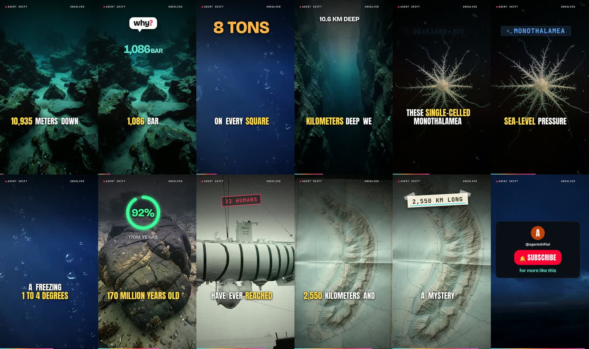

How one Short was made: the Mariana Trench
Cloud run 40867896059, 29 Oct 2026, 11:46–12:06 UTC. Every input and output below is taken from that run's log and saved files.
Where everything runs (including Claude in Telegram)
- Telegram is only the chat window. Nothing runs there.
- Claude's commands (reading code, tests,
gh, the orchestrator) run on a temporary GitHub Actions machine started by thechatworkflow for each message. It checks out the repository, runs Claude Code, then is deleted. Only memory, conversation and Claude's pull requests are kept in the repository. - Making a Short runs the same way, on its own machine (
free-dailyororchestratorworkflow). Nothing runs on your Mac.
Topic picker
≈ 1 minunsolved.- Library of Alexandria: 50%, score 1.5
- Roman concrete: 25%, score 0.75
- Mariana Trench: 75%, score 2.25 ← picked
✓ Good pick: on-niche, filmable, the highest real-picture coverage.
Wikipedia facts
secondsMariana Trench.✓ Correct, and the only source the script may use.
Script writer
attempt 1 failed (6 min of quota waits); attempt 2 ≈ 2 minearth.| Beat | Narration | On screen | Picture asked for |
|---|---|---|---|
| hook | 10,935 meters down, the pressure is 1,086 bar. | "why?" bubble, count-up to 1,086 BAR | photo: Mariana Trench depth |
| b1 | That is 8 tons of weight on every square inch of your body. | 8 TONS | footage: underwater ocean bubbles |
| b2 | Yet, at 10.6 kilometers deep, we found life thriving. | 10.6 KM DEEP | photo: deep sea trench |
| b3 | These single-celled monothalamea survive 1,071 times sea-level pressure. | MONOTHALAMEA (scramble graphic) | photo: monothalamea xenophyophore |
| b4 | The water is a freezing 1 to 4 degrees Celsius. | TEMP 1-4 °C | footage: deep sea hydrothermal |
| b5 | They live on crust that is 170 million years old. | ring "170M YEARS" (filled to 100%) | photo: oceanic crust geology |
| b6 | Only 22 people have ever reached these crushing depths. | 22 HUMANS | photo: bathyscaphe Trieste |
| b7 | The trench spans 2,550 kilometers, and it is mostly a mystery. | 2,550 KM LONG | photo: Mariana Islands map |
| outro | What else is hiding in the dark? Follow for more. | THE UNKNOWN | footage: dark ocean abyss |
⚠ One error: "22 people" (Wikipedia says 22 crewed descents). The new context-aware fact check would now reject it. Correction to my earlier note: the "92%" in the preview was the 100% ring caught mid-animation, not an invented number; the ring itself still says nothing useful.
Pictures (stills)
315 s- Real photos were rejected for good reasons: a deep-sea creature labelled "Mariana Trench depth", a person in a trench coat, a map with text.
- Openverse timed out 5 times at 30 s each, wasting 2.5 minutes.
- The vision check ran out of free quota midway, so later photos were judged on title only.
⚠ Mostly AI images: the main reason the visual scores were not higher.
Footage (moving pictures)
32 s⚠ The same clip on two beats; fixed since (a clip is never reused in one Short).
Voice and sound
voice 29 s · mix 2 s✓ Technically clean. Pronunciation (e.g. "monothalamea") is not checked automatically.
Graphics, captions and compositing
overlay 43 s · composite 92 sfinal.mp4: 1080×1920, 40 s, 37 distinct shots; captions in groups of three words; gallery motion graphics (count-up, scramble).⚠ Captions split mid-phrase ("KILOMETERS DEEP WE"), and the scramble graphic looks garbled mid-animation. Both fixed since.
Hard gates (code checks)
17 sJudge (independent AI reviewer)
≈ 1 minScorecard: hook A, story B, visuals C, polish C, policy A.
- Fixes it asked for: drop the unexplained ring graphic; one consistent font style; bigger small text; show the "1,071×" number visually.
⚠ It missed the "22 humans" error, because it never saw the facts.

Upload pack and delivery
≈ 1.5 min⚠ The credits listed 4 rejected photos (a couple, jellyfish, pizza, airplane window). Corrected in the saved project before upload, and fixed in code. YouTube upload waits on your /upload after the login renewal.
Total
20 minutes on the cloud machine, including 6 minutes lost to free AI quota limits and 2.5 minutes to Openverse timeouts. The video itself took 528 s to make (attempt 2).